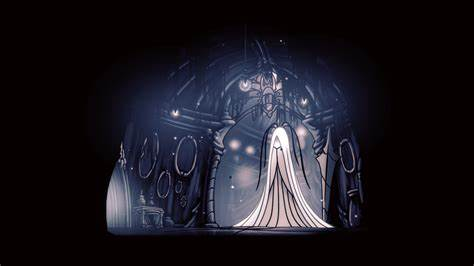
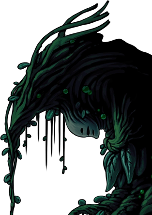

Unique Bosses
Bosses are unique enemies in Hollow Knight that typically have higher health or deal more damage than the standard creatures in the same area. The Knight may have to defeat a Boss to access a new area, acquire an item, complete a quest, or simply further the main story of the game. When the Knight encounters a boss, the name usually appears on-screen, and the music changes into a battle theme. Counting the variations, there are 47 bosses in the game.
Ze´Mer

Grey Mourner's real name is Ze'mer. She used to be one of the Five Great Knights of Hallownest. She is not originally from Hallownest, being native to an area outside of the kingdom known as "lands serene". It is from this place that she also brought Delicate Flowers.
The daughter of the Traitor Lord was her lover, but the mantises denied their union, rejecting Grey Mourner due to her being an outsider. Some time after her Mantis lover died, Grey Mourner retreated to her house in the Resting Grounds where she turned to mourning.
Isma
The Dream Nail is a sacred weapon and talisman, which can cut the veil that separates the waking world from dreams. It appears to have been made by the Moth Tribe. The Dream Nail allows its user to not only read the thoughts of an entity, or even inanimate objects, but also enter specific sections of the Dream Realm. Before the Knight acquires it, the blade dulled over time, making it necessary to fill it with enough Essence to awaken it. Essence are the fragments of light that dreams are composed of.